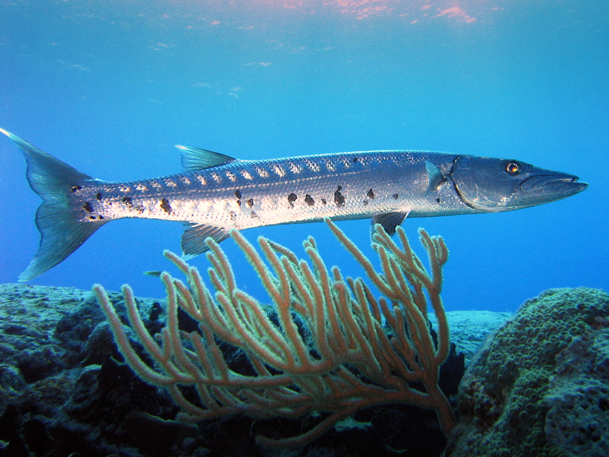

Welcome to the Fish Web Site. Everything you want to know about fish is in this website.
Bass fish live in lakes. The word for fish in Latin is Pisces
A fish is any member of a paraphyletic group of organisms that consist of all gill-bearing aquatic craniate animals that lack limbs with digits. Included in this definition are the living hagfish, lampreys, and cartilaginous and bony fish, as well as various extinct related groups. Most fish are ectothermic ("cold-blooded"), allowing their body temperatures to vary as ambient temperatures change, though some of the large active swimmers like white shark and tuna can hold a higher core temperature.Fish are abundant in most bodies of water. They can be found in nearly all aquatic environments, from high mountain streams (e.g., char and gudgeon) to the abyssal and even hadal depths of the deepest oceans (e.g., gulpers and anglerfish). With 33,100 described species, fish exhibit greater species diversity than any other group of vertebrates
A fish is any member of a paraphyletic group of organisms that consist of all gill-bearing aquatic craniate animals that lack limbs with digits. Included in this definition are the living hagfish, lampreys, and cartilaginous and bony fish, as well as various extinct related groups. Most fish are ectothermic ("cold-blooded"), allowing their body temperatures to vary as ambient temperatures change, though some of the large active swimmers like white shark and tuna can hold a higher core temperature.Fish are abundant in most bodies of water. They can be found in nearly all aquatic environments, from high mountain streams (e.g., char and gudgeon) to the abyssal and even hadal depths of the deepest oceans (e.g., gulpers and anglerfish). With 33,100 described species, fish exhibit greater species diversity than any other group of vertebrates